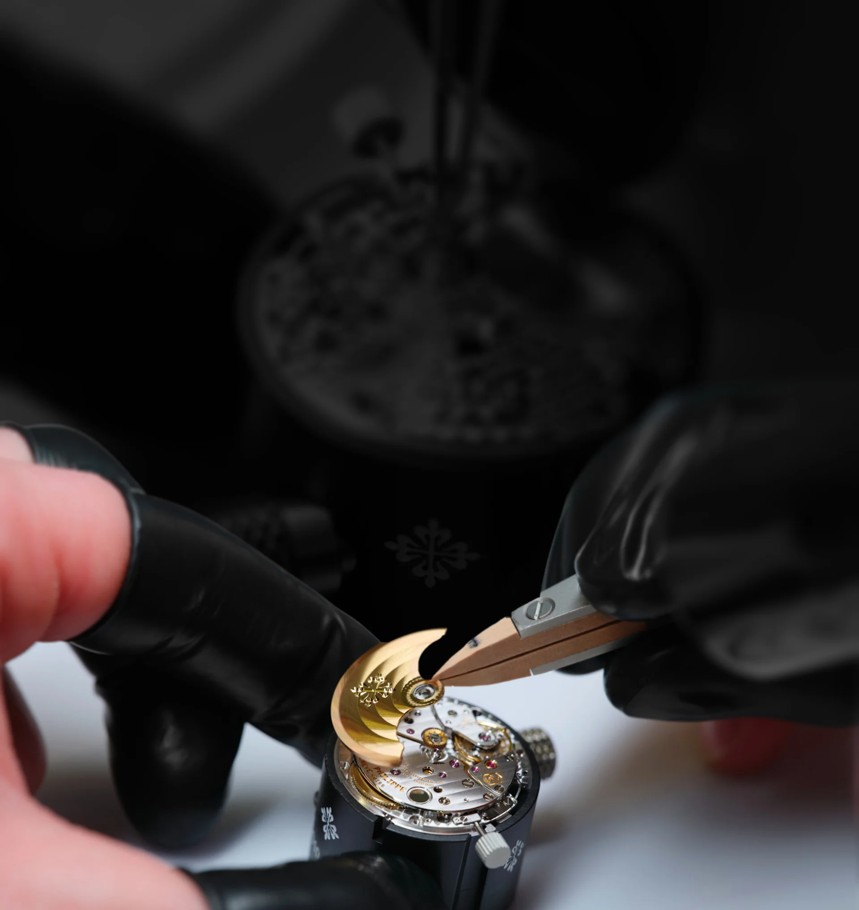
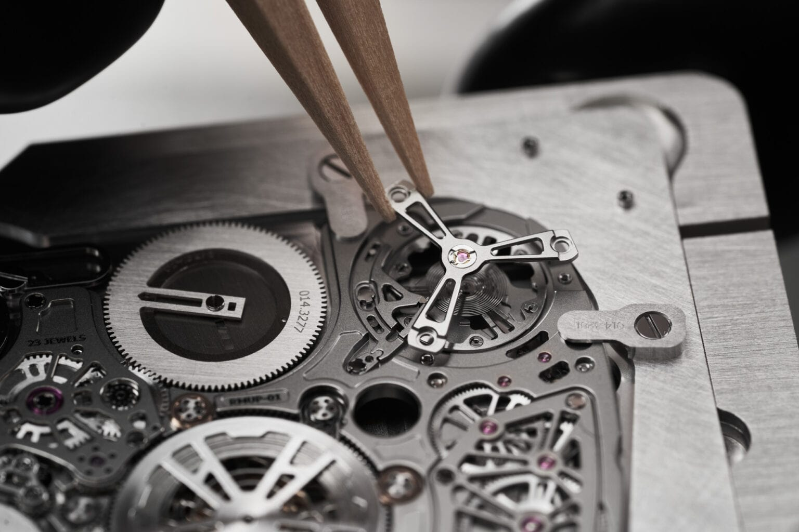
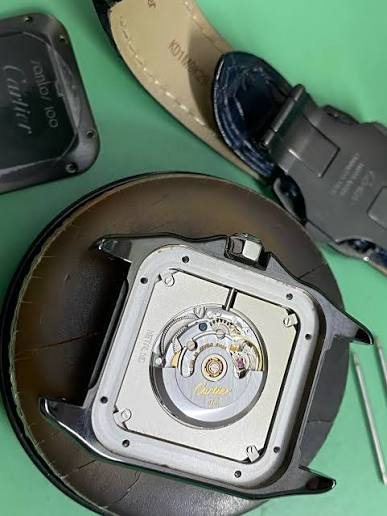

Craft over shortcuts. Geneva, since 1998.
Aurum was founded on a single premise: a watch should earn every detail it carries. We still build that way, in small numbers, by hand.

Fewer watches, made properly
We design and assemble a small collection of timepieces for people who notice the difference between decoration and craft.
Every case, dial and movement passes through the hands of a small team before it leaves the workshop. We build in limited numbers not because we can't scale, but because we'd rather stand behind fewer watches than apologize for more.
That discipline shows up in small ways: a bezel action tuned by hand, a dial finish checked under three different lights before approval. None of it is visible in a product photo. All of it is felt on the wrist.

The house in four numbers

- 1998
- The year the workshop opened at 12 Rue du Rhône.
- 5
- References in the collection. Never more at one time.
- 2 sec
- The most a movement may drift in a day before it is cased.
- 1
- Watchmaker per Calibre, from the first part to the final seal.
What we hold to
-
Craft
Bevels, Geneva stripes and black polish are done by hand, also on the parts no owner will ever see.
-
Patience
A new reference takes about four years from the first sketch to the first delivery.
-
Restraint
No complication goes on a dial unless the wearer would miss it.
-
Precision
Every movement is tested in six positions and at two temperatures before it is cased.